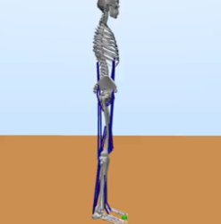
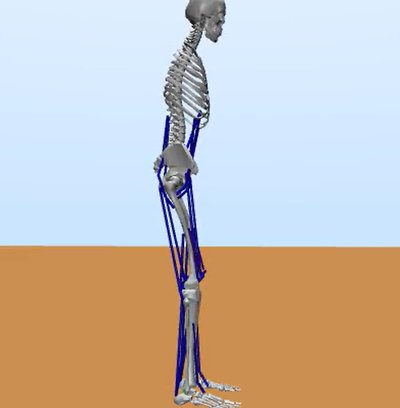

異常姿勢となる要因の解明
高齢者の背中が曲がるのはなぜ？
背中は筋力の低下などで曲がってしまったのか、それとも自ら曲げているのか。 筋骨格モデルの胸椎に自由度を加えて立位姿勢を構築し、姿勢が崩れる要因を調べています。
担当：小林 駿太
私たちは、ヒトの運動を計算機（コンピュータ）の中で「作って」、その仕組みを「調べて」います。 ヒトは感覚を得て、脳神経系で運動を計画し、筋肉を動かして骨格を動かし、環境に働きかけることで運動を生み出しています。 この流れが弱まったり壊れたりすると、フレイルティや障がいにつながります。
けれども、そもそもヒトの脳神経系がどのように運動を生み出しているのかは、まだ十分に分かっていません。 リハビリテーションやスポーツ科学への応用を見据えて、その仕組みの解明に取り組んでいます。
この流れを計算機の中で再現するために、次の4つを組み合わせてヒトの運動をシミュレーションしています。
高齢者の背中が曲がるのはなぜ？
背中は筋力の低下などで曲がってしまったのか、それとも自ら曲げているのか。 筋骨格モデルの胸椎に自由度を加えて立位姿勢を構築し、姿勢が崩れる要因を調べています。
担当：小林 駿太
高齢者と若年者で姿勢が異なるのはなぜか？
「高齢者は転倒への恐怖によって円背になる」という仮説を立て、検証しています。 転倒時に受けるダメージを転倒への恐怖とみなし、それを小さくするように評価すると、 モデルは少し前傾した姿勢で立つようになりました。
担当：阪田 優之介

外乱
高齢者が外乱から立ち直りにくいのはなぜか？
立っているときに外から力（外乱）が加わると、高齢者は姿勢を立て直しにくくなります。 その原因は筋力の低下なのか、神経の伝達の遅れなのか。外乱に対する立位の制御戦略を計算機モデルで調べています。
担当：越智 雅宏
歩き始めと立ち止まりの仕組みはどうなっているのか？
転倒は、歩き始めや立ち止まるときに多く起こります。 歩行開始動作と歩行停止動作の計算機モデルを構築し、それらを生み出す制御メカニズムの解明を目指しています。
視覚の手がかりが姿勢に効くのは、どういう原理？
視覚的な手がかり（視覚キュー）が筋活動や姿勢に影響を与えることが示唆されています。 VRの高所環境の周囲に壁を置いて安心感を与えたり、三次元グリッドを加えて空間上の自己位置の推定を補助したりして、 姿勢や筋活動がどう変わるかを調べています。
担当：尾澤 彪吾
転びそうなとき、姿勢が硬直してしまうのはなぜか？
VRで高所環境をつくり出して恐怖感を感じてもらい、筋電図などを計測しています。 「落ちるかもしれない」という姿勢への脅威と、視覚と体性感覚の食い違いという二つの要因に着目し、 筋の緊張が高まる仕組みを調べています。
担当：加藤 芙麻
研究室見学のご希望やご質問は、お気軽にご連絡ください。
アクセス・連絡先